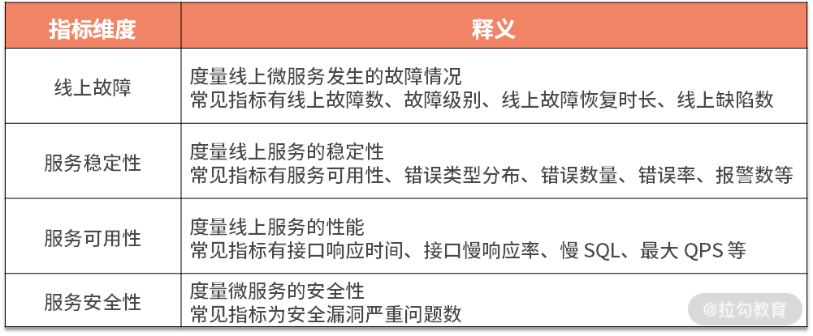
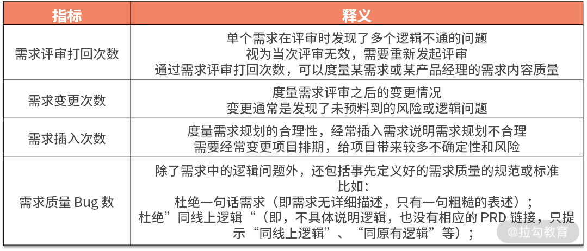
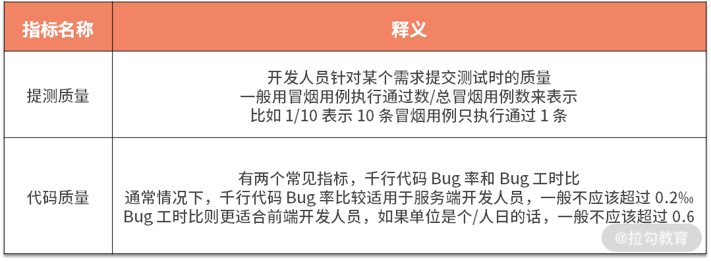
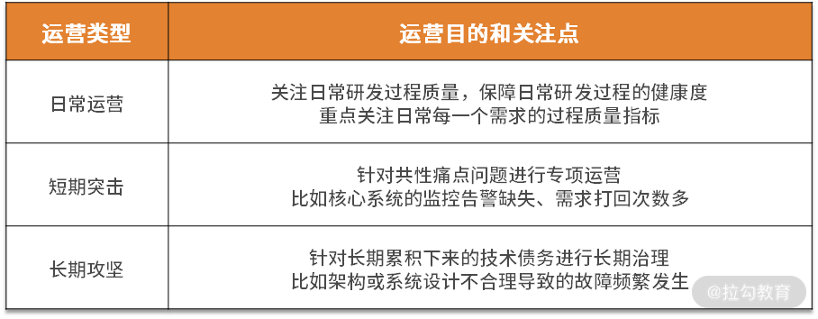

- 00 开篇词 既往不恋，当下不杂，未来不迎.md.html
- 01 微服务架构有哪些特点？.md.html
- 02 微服务架构下的质量挑战.md.html
- 03 微服务架构下的测试策略.md.html
- 04 单元测试：怎样提升最小可测试单元的质量？.md.html
- 05 集成测试：如何进行微服务的集成测试？.md.html
- 06 组件测试：如何保证单服务的质量？.md.html
- 07 契约测试：如何进行消费者驱动的契约测试？.md.html
- 08 端到端测试：站在用户视角验证整个系统.md.html
- 09 微服务架构下的质量保障体系全景概览.md.html
- 10 流程规范篇：高速迭代的研发过程需要怎样的规范？.md.html
- 11 测试技术篇：测试技术这么多，我该如何选型？.md.html
- 12 测试技术篇：如何提升测试效率？.md.html
- 13 测试技术篇：专项测试技术解决了哪些专项问题？.md.html
- 14 CICD 篇：如何更好地利用多个“测试”环境？.md.html
- 15 CICD 篇：如何构建持续交付工具链？.md.html
- 16 度量与运营篇：如何做好质量和效率的度量与运营？.md.html
- 17 度量与运营篇：如何度量与运营效率和价值？.md.html
- 18 组织保障篇：质量是设计出来的.md.html
- 19 软件测试新趋势探讨.md.html
- 20 结束语 QA 如何打造自身的核心竞争力？.md.html
- 捐赠
16 度量与运营篇：如何做好质量和效率的度量与运营？
管理学大师德鲁克曾说过“如果你无法衡量它，就无法管理它（If you can’t measure it, you can’t manage it）”。可见，要想有效管理某事务，就需要将它全面且有效地度量起来，而要想针对某个方面进行改进，就需要有针对性地运营。本课时我们就详细聊一聊，如何做好质量度量与运营。首先第一个要聊的问题就是，度量和运营分别是什么。
度量和运营
度量
软件度量就是衡量软件品质的一种手段，其根本目的是管理的需要，为项目管理者提供有关项目的各种重要信息，其实质是根据一定规则，将数字或符号赋予系统、组件、过程或者质量等实体的特定属性，即对实体属性的量化表示，从而能够清楚地理解该实体。软件度量贯穿整个软件开发生命周期，是软件开发过程中进行理解、预测、评估、控制和改善的重要载体。
听起来不容易理解，我们举个实际的例子。
在软件项目过程中，经常会听到某个测试人员小 T 有这样的“抱怨”：开发人员小 D 的开发质量太差了。又过了一段时间，小 T 反馈说小 D 的开发质量有所提升。单看这两次主观的评价，无法评判小 D 的开发质量究竟有多差，也无法评判小 D 的开发质量是不是在变好。这是因为这里提到的”开发质量“和”有所提升“都只是小 T 的主观感受，不客观，更不量化。
假如我们用“缺陷工时比”这个指标来度量小 D 的开发质量，则可以记录小 D 完成每一个开发任务所耗费的工时数和测试该任务所发现的缺陷数，用缺陷数/工时数可得到缺陷工时比。观测一个周期内这个数值的变化，就能知道小 D 开发每一个任务时的质量现状，以及这个周期内的变化趋势。如果小 D 想要提升开发质量，也知道具体提升的是哪个数据，从而拆解出要做的具体事情。
从上面的例子中也不难看出度量的价值和意义。
- 使现状有客观的评判：度量可以告诉我们现状如何，或者具体问题所在。
- 对目标有统一的共识：对目标有共同的认识，或者具备统一的评判标准。
- 使改进更聚焦和精准：质量是个宽泛的概念，如果不能聚焦到特定的指标，则无法做到有的放矢。
运营
运营，通常着眼于软件产品的全生命周期，以某一内容为核心，数据驱动，通过一系列的良性循环干预动作，最终提升该内容的某项或多项指标。
比如，产品运营是通过一系列人为干预动作来提升产品各维度的指标；内容运营是通过人为干预使内容从生产、加工、互动、消费直至输出形成一个良性的循环；用户运营是通过人工干预使产品和用户产生联系，从拉新、留存、促活一直到商业变现形成一个良性的闭环；活动运营是针对某一活动进行策划、执行、评估、改进的全过程项目管理。
可见，运营的本质是发现问题、拆解问题、解决问题的过程，它强调其人为干预动作需要形成 PDCA 正向循环。
本课程中”度量与运营”中的运营，与上面的运营序列不同，它是用运营的思路深入到质量保障全过程中，通过数据驱动提升质量、效率、价值等多方面的度量指标，最终实现业务价值。
质量是测试团队和测试人员的第一要务，因此，我们首先来看下质量度量和运营。
质量度量体系
质量度量的核心指标
我们知道，质量保障的目标是线上环境没有故障和缺陷，这是最终交付给真实用户的质量，即交付质量。那么，质量度量是不是只关注交付质量指标就足够了呢？答案显然是否定的。因为如果只关注交付质量，往往达不到提升交付质量的目的。比如，你每天关注线上交付质量，忙着一个又一个的项目，一段时间过后，发现线上环境的故障数和缺陷数未见减少，这时候你甚至不知道根因出在哪里，应该如何改进，现有的工作哪些要继续保持哪些要放弃，等等。
这是因为交付质量是滞后性指标，当你知道它时，它已经发生了。要想避免此类情况，还需要多关注并改善引领性指标。生活中的减肥的场景更能说明问题。
有过减肥经历的同学应该知道，减肥过程中，你通常会特别关注体重本身，经常时不时地去称量体重。观察了一段时间体重后，发现效果不好，你渐渐放弃了后续的坚持，减肥计划再一次泡汤。在这里，体重就是一个滞后性指标，当你知道体重时，之前做的减肥的改进动作都已经发生，不能再改变。而减肥的过程中，卡路里的摄入量和能量的消耗量则属于引领性指标（引领性指标通常具有两个特点：预见性和可控性）。很显然，每天摄入的卡路里-燃烧的能量=每天最终摄入的能量。只有保持这个数值在一段时间里是负数，减肥成功才有希望。
滞后性指标：顾名思义，就是事情已经发生之后产生的数据。 引领性指标：与滞后性指标相反，是一个前置指标。
滞后性指标只能告诉你目标是否达成，不会告诉你怎么样达成这个目标（即过程）。而引领性指标，对结果可预见，过程可控制。所以，在软件交付过程中，要从关注滞后性指标改为关注并改善引领性指标。交付过程中的过程质量则是引领性指标，按照交付阶段，产品交付过程又分为需求阶段、开发阶段、测试阶段、发布阶段，因此质量度量可以进一步细分为按如下核心指标。

(1) 交付质量
对于微服务来说，线上质量可以通过如下维度来度量。

从上述指标不难看出，保障交付质量是要努力减少线上故障和线上缺陷，降低故障级别。微服务架构线上故障几乎不可避免，那么就需要最大限度地降低线上故障的影响，比如降低线上故障的恢复时长，减少对生产环境真实用户的影响。
(2) 过程质量之需求质量
在产品交付过程中，需求的规划和评审是起点，所以规划质量和内容质量会间接影响到代码质量和测试质量。需求质量通常有两层理解，一是需求所涉及的研发项目的质量，这种理解比较接近整个需求开发的过程质量，二是该需求所对应的 PRD 的规划质量和内容质量，本文指的是第二种。
PRD 的质量可以用如下指标来衡量。

一般来说，需求质量 Bug 数应该占总 Bug 数的 5% 左右。需求评审打回的标准可以是发现 5 个逻辑类的问题。需求评审打回、需求变更、需求插入等情况，对软件过程的健康度和质量有较大危害，建议制定相对严苛的流程规范，并结合质量运营手段来应对此类情况，以减少此类情况发生。比如需求评审不通过时，需求文档的作者需要向相关人员发送重新评审的申请邮件，并针对当次打回情况做改进分析。
(3) 过程质量之开发质量
我们在工作中，经常会反馈开发质量差的问题，但是有多差、差在哪里，又很难说清楚。常见的开发质量指标有：

一般情况下，提测质量等于 1 才符合预期，即 15/15、12/12 等，因为只要有 1 条冒烟用例执行不通过，则可以进行提测打回。你可能会好奇，既然有 1 条执行不通过就提测打回，那么是不是就不用执行后续用例了，直接记录提测打回数为 1 不是更好吗？这是因为，即使提测打回的情况下，比如提测质量是 1⁄15 还是 13/15，还是有很大区别的，这也是为了后续更好地进行质量分析和运营。
(4) 过程质量之测试质量
质量度量过程中，测试团队和人员自身的测试质量也需要额外重视，常见的指标有：

(5) 过程质量之发布质量
发布环节直接操作线上环境，是非常关键的一个环节，它的质量不容忽视。所以，需要特别留意发布类的相关指标，常见的有：
- 构建失败率，在一个特定的时间段内，构建失败次数占总构建次数的比率，反映了构建的质量；
- 发布回滚率，在一个特定时间段内，回滚次数占总发布数的比率；
- 非发布时间发布次数，指不同的业务有着不同的高峰时间段，比如外卖业务高峰时间段是一日三餐时，所以发布时间应该尽可能避开业务高峰时段。如果没有合理的原因，又没有避开业务高峰期时，可以记录为一次非发布时间发布。
通常情况下，构建失败率和发布回滚率应该控制在 1% 以内，所以每一次发布失败和发布回滚都值得深入分析。非发布时间发布，很容易造成线上故障，且由于处于业务高峰时段，出现故障时容易出现“雪崩效应”，造成的业务影响难以估量，因而应予以杜绝非发布时间发布线上服务。
质量度量实践认知
在进行度量的过程中，我也走过不少弯路，踩了坑，产生了一些经验和认知，这里分享给你。
- 质量度量指标一定要符合 SMART 原则，否则它充其量是一个愿景，不可落地。
SMART原则构成： 指标必须是具体的（Specific）； 指标必须是可以衡量的（Measurable）； 指标必须是可以达到的（Attainable）； 指标是要与其他目标具有一定的相关性(Relevant)； 指标必须具有明确的截止期限（Time-bound）。
- 质量度量是质量现状的镜子，要想改变现状，首先要接受现状。
- 追求单一或局部指标的提升比较容易，但很容易产生扭曲行为，构建指标体系并整体提升才是正确的路。比如，要想降低千行代码 Bug 率，可以在不增加 Bug 数量的前提下，有意稀释代码，这样该指标肯定能降低，但没有任何意义，自欺欺人罢了。
- 度量指标的确定，要与相关方达成共识，自上而下认可它们。质量不是测试团队自己的事情，需要产品研发相关方共同的努力。如果制定了一个度量指标，需要相关方提升它，但相关方并不认可它，就容易产生太多无效沟通和扯皮。
另外，《精益软件度量》提道：度量是把双刃剑，具有极强的引导性。度量指标会激励团队重视并改善能够度量的元素，也会导致你忽视无法度量的元素，并使得问题进一步恶化。
质量运营
质量运营的目的是质量改进，质量度量是其着陆点，因为形成了多维度的质量度量体系，所以当出现质量痛点或质量隐患时，可以比较容易在度量指标上得以体现。质量运营是基于质量痛点进行分析，找到可能的解决方案，制定规划并推进，对其进行阶段性地复盘和改进。
我们之前一直有讲过 PDCA，它把质量运营各项工作按照作出计划、计划实施、检查实施效果，然后将成功的纳入标准，不成功的留待下一循环去解决。如下通过 PDCA 四个方面对质量运营展开说明。
P（Plan）：制定改进计划
质量改进计划的制定是质量改进过程的第一步，也是最为关键的一步，你可以从如下改进思路制定计划。
- 质量痛点驱动：针对日常研发过程中出现的质量痛点问题进行复盘，分析问题所在，制定出可落地的改进方案，利用质量度量体系评估改进效果，从而闭环质量改进过程。
- 质量目标驱动：从组织管理视角定下来总体质量目标，进而拆解出各个团队在各项度量指标上的合理目标值；在日常研发过程中收集各项指标数据，针对不满足目标的团队进行定向管理和数据分析，从而制定出可落地的改进方案。
通常来说，初创业务或成长期业务下，业务变化快，质量保障建设薄弱，质量痛点问题多，质量目标难以确定，这时候以质量痛点驱动为主。随着业务逐渐成熟和稳定，质量在业务中的重要性更为凸显，对质量目标的要求越来越高，这时候以质量目标驱动为主，质量痛点驱动为辅。
D（Do）：实施落地计划
无论采取怎样的质量改进思路，质量运营都是一个持续运转和迭代的过程，运营周期不同，目的和关注点也有较多不同，具体如下：

数据收集和聚合
有了质量度量体系，还需要针对这些指标所对应的数据进行收集和聚合，这就需要在产品研发过程的关键环节进行”埋点“，对关键过程数据和结果数据进行存储。因此，建议利用成熟的项目过程管理工具，如 Jira、TAPD 等。随着度量指标的丰富，可能还需要进行二次开发或者自建平台。
C（Check）：复盘和反馈
复盘是质量运营中非常关键的环节，它起到了承前启后的作用。它的最佳场所，常常体现在各种书面总结报告或复盘总结会议上，能够起到最大程度的效果触达，同时提升相关团队的质量意识和认知。报告：如，测试报告、质量周报、质量月报，等等。
- 会议：如，周会、月会、季度总结、半年总结、大型项目复盘会，等等。
A（Action）：改进和推广
基于前面的步骤，可以知道质量运营计划和改善策略是否有效，如果有效，则进行推广，反哺到日常研发过程中，尽量形成平台能力或可落地的规范。
比如，经过一段时间的质量度量与运营后，当各团队的 Bug 工时比都小于 0.6，那么可以和相关方团队达成共识，将标准提高到 0.4。而如果改善未达预期或完全无效，则可进一步分析原因，从而优化或改进落地计划。
质量运营实践认知
在这里，我也分享一些质量运营的实践认知给你，希望能帮助到你。
很多测试团队所做的质量运营都止步于通晒数据，而事实上最重要的是要基于数据进行分析，帮助相关方做改进，同时跟进反馈改进的效果。看数据谁都会看，做改进才是主要。
质量运营需要推动多个团队配合，应“先礼后兵”，不可轻易用向上管理的激进方式。首先，采用向上管理的方式容易使团队间产生对立情绪，影响日常协作。其次，以我多年的经验，没有哪个团队不重视质量，只是有时候它们在质量改进方面并不是足够专业，这时候反而是测试人员扮演老师和教练角色的时候，带领他们一起做分析、改进和提升。
总结
本节课我讲解了度量与运营的基本知识，包括度量的意义（使现状有客观的评判、对目标有统一的共识、使改进更聚焦和精准），以及运营的本质，它是发现问题、拆解问题、解决问题的过程，强调其人为干预动作需要形成 PDCA 正向循环。
接着我讲解了产品研发过程中针对质量可度量的核心指标，包括交付质量和过程质量。过程质量又分为需求质量、开发质量、测试质量和发布质量。在每一个维度中又有若干个具体的度量指标和含义。同时，我还给出了进行质量度量时的一些实践认知。
最后我讲解了产品研发过程中质量运营的 PDCA 循环。
- 制定改进计划：采用“质量痛点驱动”或“质量目标驱动”的方式进行质量改进。
- 实施落地计划：质量运营可以分为“日常运营”、“短期突击”和“长期攻坚”三种类型，并针对度量指标所对应的数据进行收集和聚合。
- 复盘和反馈：复盘是质量运营中非常关键的环节，它起到了承前启后的作用。它的最佳场所，常常体现在各种书面总结报告或复盘总结会议上。
- 改进和推广：基于前面的步骤，判断是否有效果。如果有效，则进行推广，反哺到日常研发过程中；如果无效则继续改进。
最后我给出了质量运营方面的实践认知，供你参考。
你所经历的业务或项目，质量度量和运营是如何进行的呢？请写在留言区里。
相关链接 《精益软件度量》张松 著 质量度量指标设定分析： https://www.dazhuanlan.com/2020/01/29/5e31611a378ad/ 质量运营在美团点评智能支付业务测试中的初步实践：https://zhuanlan.zhihu.com/p/36714420
© 2019 - 2023 Liangliang Lee. Powered by gin and hexo-theme-book.